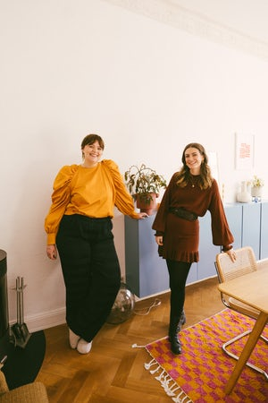

10. März 2022
Gesponserter Artikel

#BEIGEsprochen: Farbig, innen und außen – Zu Besuch bei Body-Aktivistin Charlotte Kuhrt
Wir waren zu Gast in der lichtdurchfluteten Altbauwohnung der Opinion Leaderin in Berlin-Charlottenburg
In Kooperation mit MADE.COM